7. Vectors
Position vectors · lines · scalar products · 3D geometry
本页依据 9709 Mathematics 2026–2027 syllabus 3.7，覆盖：
- standard vector notation：column vectors、\mathbf i,\mathbf j,\mathbf k、\overrightarrow{AB} 和 \mathbf a；
- vector 的 addition、subtraction、scalar multiplication 及几何意义；
- magnitude、unit vector、displacement vector 和 position vector；
- 直线的 vector equation \mathbf r=\mathbf a+t\mathbf b；
- 判断两条直线 parallel、intersect 或 skew，并在相交时求 intersection；
- 用 scalar product 求 angle、perpendicular、foot of perpendicular 及相关几何量。
本页不引入 vector product；2026–2027 syllabus 不要求 shortest distance between skew lines。
Learning objectives
1. Core vector rules
若 A、B 的 position vectors 分别是 \mathbf a、\mathbf b，则
\overrightarrow{AB}=\mathbf b-\mathbf a,\qquad \overrightarrow{BA}=\mathbf a-\mathbf b.
|\mathbf a|=\sqrt{\mathbf a\cdot\mathbf a} =\sqrt{x^2+y^2+z^2}, \qquad \text{unit vector in direction }\mathbf a=\frac{\mathbf a}{|\mathbf a|}.
若 M 是 AB 的 midpoint，
\overrightarrow{OM}=\frac12(\mathbf a+\mathbf b).
若 N 在 AB 上且 AN:NB=m:n，
\overrightarrow{ON}=\frac{n\mathbf a+m\mathbf b}{m+n}.
2. Lines and scalar products
经过 position vector \mathbf a 的点、direction vector 为 \mathbf b 的直线：
\mathbf r=\mathbf a+t\mathbf b.
若直线经过两点 A(\mathbf a)、B(\mathbf b)：
\mathbf r=\mathbf a+t(\mathbf b-\mathbf a).
\mathbf a\cdot\mathbf b =a_1b_1+a_2b_2+a_3b_3 =|\mathbf a||\mathbf b|\cos\theta.
要求 acute angle 时使用
\cos\theta=\frac{|\mathbf a\cdot\mathbf b|}{|\mathbf a||\mathbf b|}.
判断 3D 直线相交时必须解完三个 coordinate equations；若 direction vectors 不平行且没有共同 solution，则是 skew。
Foot of perpendicular
若 F 在线 \mathbf r=\mathbf a+t\mathbf b 上，则写
\overrightarrow{OF}=\mathbf a+t_0\mathbf b.
再用 PF\perp\mathbf b：
(\overrightarrow{OF}-\overrightarrow{OP})\cdot\mathbf b=0
求 t_0。这种写法直接对应 mark scheme 的 perpendicular scalar-product method。
3. Essential knowledge points and selected worked examples
本节只保留直接服务于考纲核心方法的代表性图片；重复的 page-like 图和不影响解题的补充图不再全部堆入页面。每个 worked example 都是独立卡片，并紧跟对应知识点。
Vector notation and direction
箭头表示 direction，线段长度表示 magnitude；同时认识 bold / underlined vector notation。
Worked example · Vector notation and direction
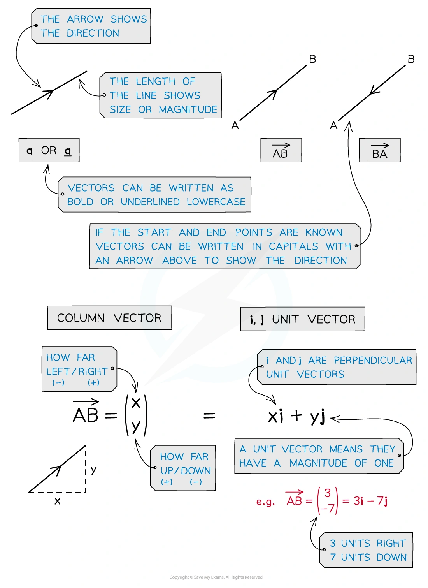
Column vectors and components
用 column vector 表示 horizontal / vertical displacement，并与 i、j unit-vector form 对照。
Worked example · Column vectors and components
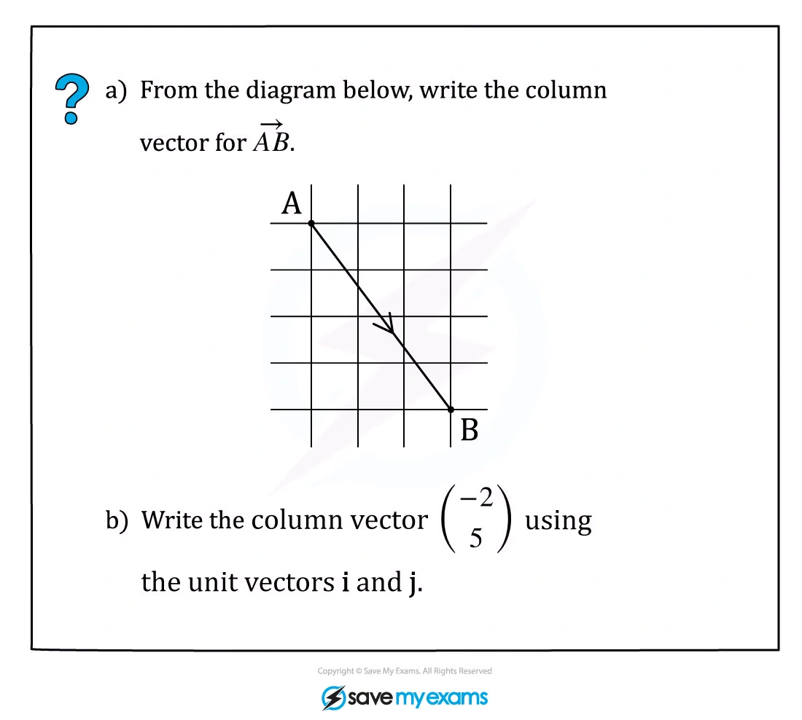
Magnitude of a vector
由 components 计算 magnitude，并检查平方根结果。
Worked example · Magnitude of a vector
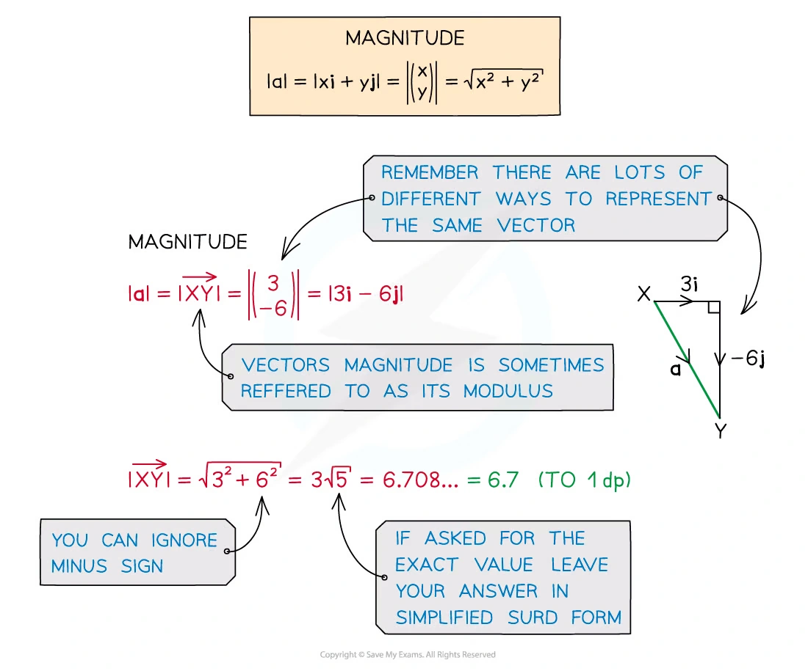
Unit vector
把 vector 除以 magnitude，得到同方向的 unit vector。
Worked example · Unit vector
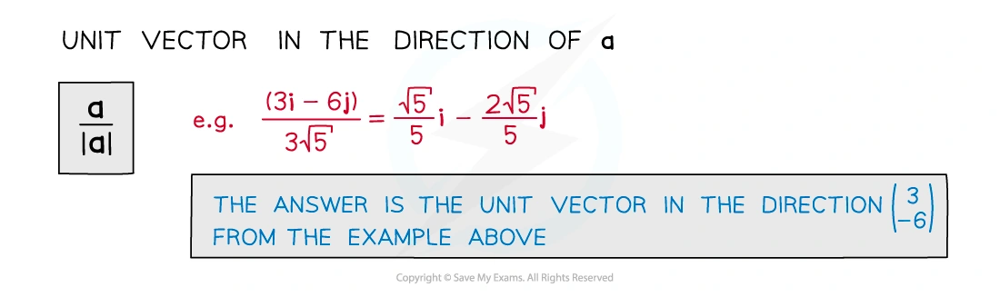
Component form and direction
把 r、magnitude 和 direction angle 联系起来，理解 x/y components。
Worked example · Component form and direction
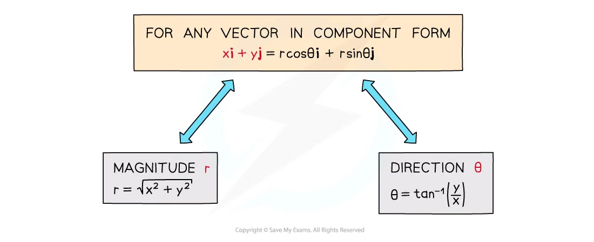
Displacement and routes
从一个点到另一个点时，用 displacement vectors 记录路线并合并向量。
Worked example · Displacement and routes
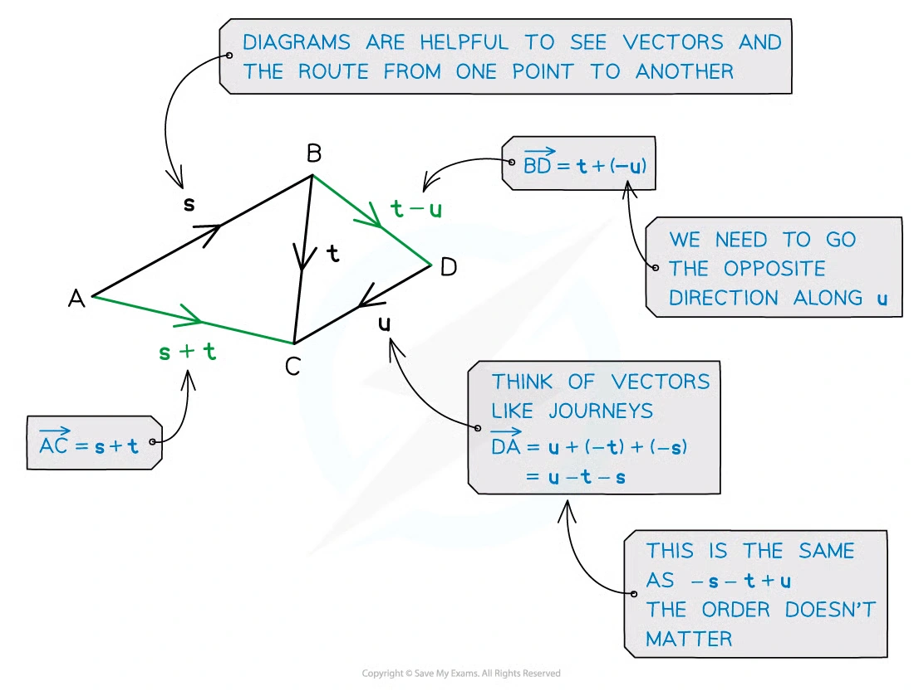
Parallelogram geometry
用平行四边形的 opposite-side vectors 建立 position-vector 关系。
Worked example · Parallelogram geometry
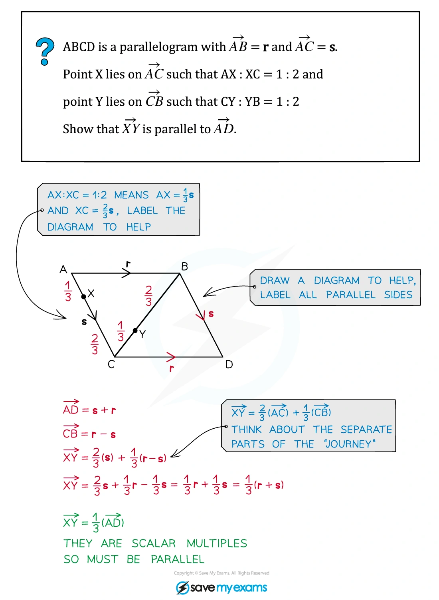
Distance from position vectors
用两点的 position vectors 求 displacement magnitude，也就是点间距离。
Worked example · Distance from position vectors
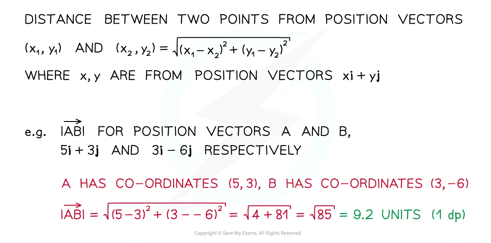
Parallel vectors
判断一个 vector 是否为另一个 vector 的 scalar multiple。
Worked example · Parallel vectors
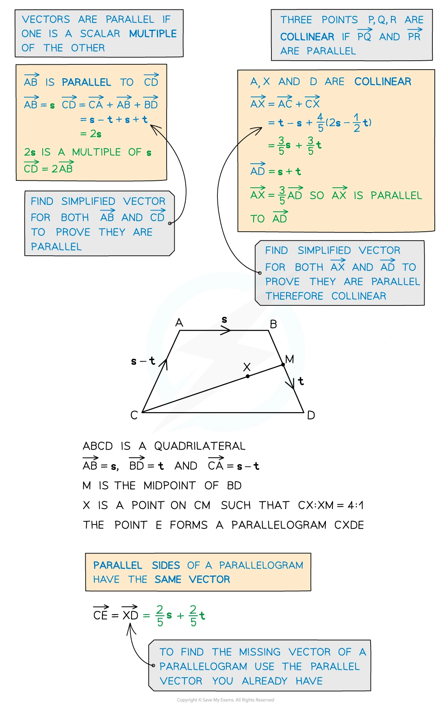
Angle in 3D
在 3D triangle 中用 scalar product 求 angle，不依赖二维图像直觉。
Worked example · Angle in 3D
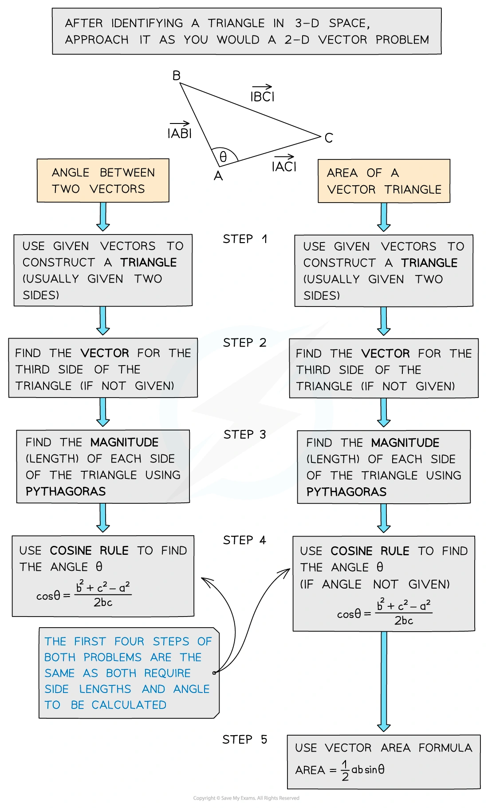
Area of a triangle
用 two side vectors 的 magnitudes、included angle 求 triangle area。
Worked example · Area of a triangle
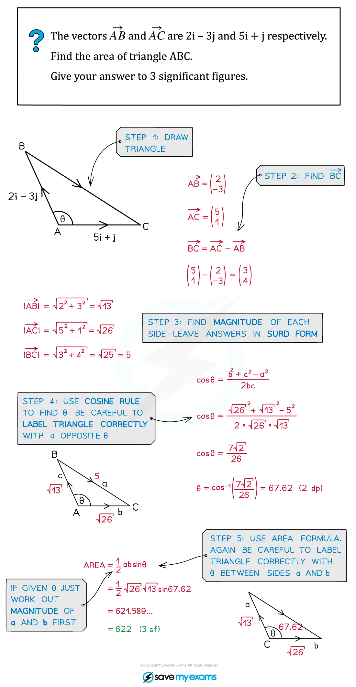
Section ratio
用 ratio theorem 找出 line segment 内点的 position vector。
Worked example · Section ratio
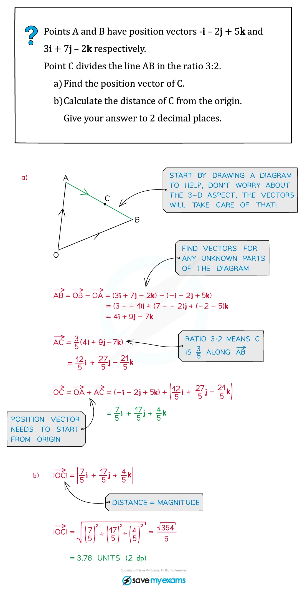
Direction cosines
理解 vector 与 x、y、z axes 的 angles 以及 direction cosines。
Worked example · Direction cosines
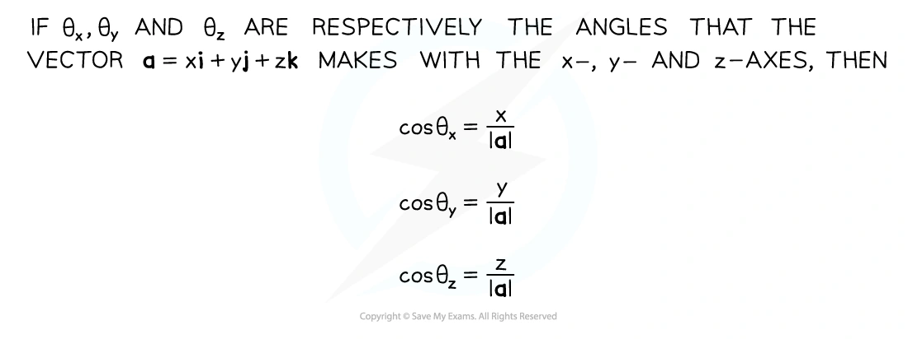
Vector equation of a line
从一点和 direction vector 写出 r = a + t b。
Worked example · Vector equation of a line
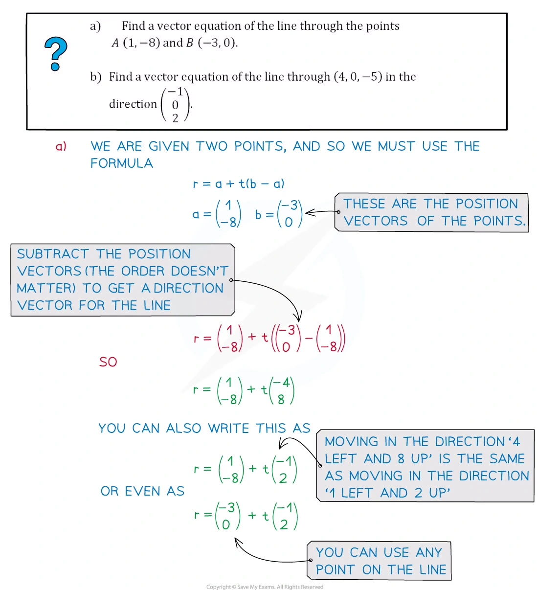
Parallel, intersect or skew
用 parameter equations 判断 3D lines 的关系。
Worked example · Parallel, intersect or skew
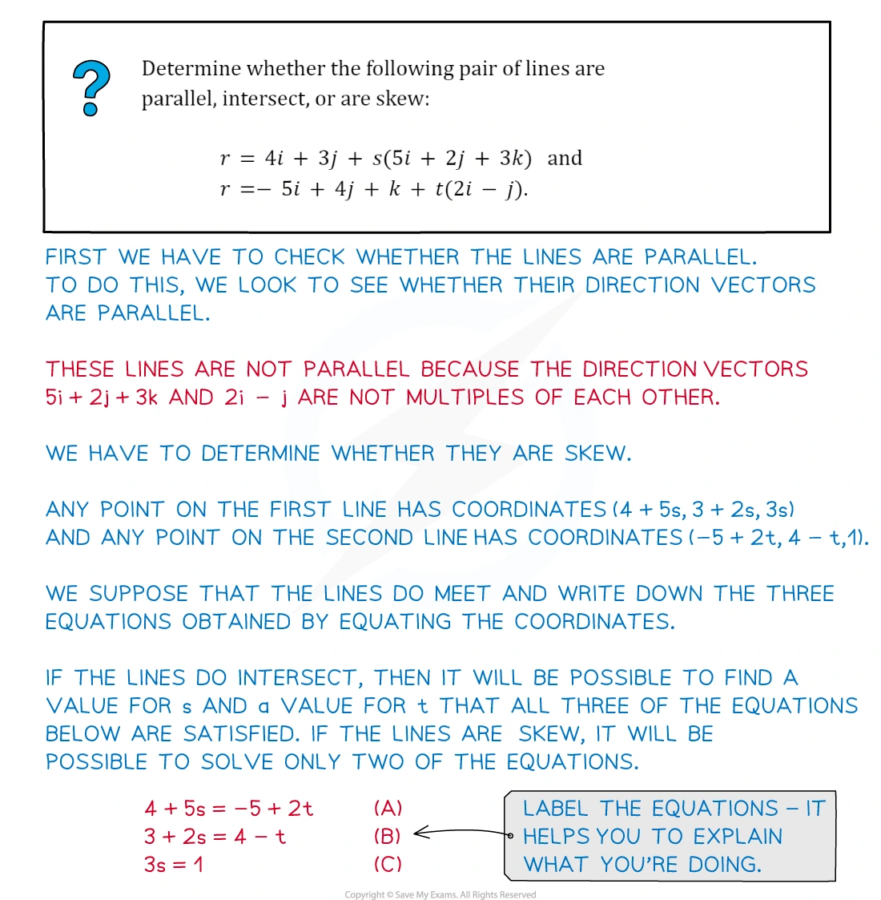
Foot of perpendicular
把 foot 写在线上，再用 scalar product = 0 求最短垂直距离。
Worked example · Foot of perpendicular
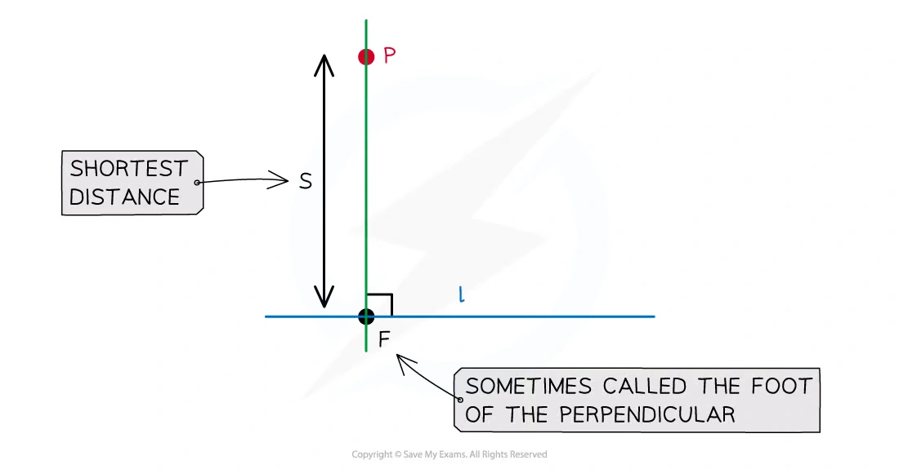
4. Selected Paper 3 questions
以下 20 题保留 past paper 的英文题目主文；答案按对应 mark scheme 的得分路径展开。向量角度均按 degrees 报出。
Position vectors and scalar products
Question 1 · 9709/31/M/J/20 Q9
scalar productperpendicular distance
With respect to the origin O, the vertices of a triangle ABC have position vectors \overrightarrow{OA}=2\mathbf i+5\mathbf k,\quad \overrightarrow{OB}=3\mathbf i+2\mathbf j+3\mathbf k,\quad \overrightarrow{OC}=\mathbf i+\mathbf j+\mathbf k.
Using a scalar product, show that angle ABC is a right angle.
Show that triangle ABC is isosceles.
Find the exact length of the perpendicular from O to the line through B and C. [3+2+4]
Show detailed mark scheme answer
\overrightarrow{BA}=(-1,-2,2),\quad \overrightarrow{BC}=(-2,-1,-2),\quad \overrightarrow{BA}\cdot\overrightarrow{BC}=0.
因此 \angle ABC=90^\circ。又 |AB|=\sqrt9=3=|BC|，所以 triangle ABC is isosceles。对直线 BC 设 direction 为 \mathbf d=(-2,-1,-2)，foot 为 F=B+t\mathbf d，使用 OF\perp BC：
0=F\cdot\mathbf d=(-14)+9t \Rightarrow t=\frac{14}{9}, \qquad F=\left(-\frac19,\frac49,-\frac19\right).
故
d=|OF|=\frac{\sqrt{18}}9=\boxed{\frac{\sqrt2}{3}}.Question 2 · 9709/32/M/J/20 Q10(a–b)
midpointline intersection
With respect to the origin O, the points A and B have position vectors given by \overrightarrow{OA}=6\mathbf i+2\mathbf j and \overrightarrow{OB}=2\mathbf i+2\mathbf j+3\mathbf k. The midpoint of \overrightarrow{OA} is M. The point N lying on AB, between A and B, is such that AN=2NB.
- Find a vector equation for the line through M and N.
The line through M and N intersects the line through O and B at the point P.
- Find the position vector of P. [5+3]
Show detailed mark scheme answer
M=(3,1,0),\qquad N=A+\frac23(B-A)=\left(\frac{10}{3},2,2\right).
所以 \overrightarrow{MN}=(1/3,1,2)：
\boxed{\mathbf r=(3,1,0)+t\left(\frac13,1,2\right)}.
令其与 \mathbf r=s(2,2,3) 相等，解 2t=3s、1+t=2s 得 t=3,s=2，故
\boxed{\overrightarrow{OP}=(4,4,6)}.Question 3 · 9709/33/M/J/20 Q8(a–b)
parallelogramangle
Relative to the origin O, the points A, B and D have position vectors given by \overrightarrow{OA}=\mathbf i+2\mathbf j+\mathbf k,\quad \overrightarrow{OB}=2\mathbf i+5\mathbf j+3\mathbf k,\quad \overrightarrow{OD}=3\mathbf i+2\mathbf k. A fourth point C is such that ABCD is a parallelogram.
Find the position vector of C and verify that the parallelogram is not a rhombus.
Find angle BAD, giving your answer in degrees. [5+3]
Show detailed mark scheme answer
平行四边形满足 A+C=B+D：
C=(4,3,4),\quad \overrightarrow{AB}=(1,3,2),\quad |AB|=\sqrt{14}, \quad \overrightarrow{BC}=(2,-2,1),\quad |BC|=3.
所以不是 rhombus。又 \overrightarrow{AD}=(2,-2,1)：
\cos\angle BAD =\frac{(1,3,2)\cdot(2,-2,1)}{\sqrt{14}\cdot3} =-\frac2{3\sqrt{14}},
故 \boxed{\angle BAD=100.3^\circ}。Question 4 · 9709/31/O/N/20 Q11(a)
intersectionparameter
Two lines have equations \mathbf r=\mathbf i+2\mathbf j+\mathbf k+s(a\mathbf i+2\mathbf j-\mathbf k) and \mathbf r=2\mathbf i+\mathbf j-\mathbf k+t(2\mathbf i-\mathbf j+\mathbf k), where a is a constant.
- Given that the two lines intersect, find the value of a and the position vector of the point of intersection. [5]
Show detailed mark scheme answer
Equating coordinates gives
1+as=2+2t,\quad 2+2s=1-t,\quad 1-s=-1+t.
后两式给 s=-3,t=5；代入 first equation：
1-3a=12\Rightarrow \boxed{a=-\frac{11}{3}}.
交点为 \boxed{\overrightarrow{OP}=(12,-4,4)}。Question 5 · 9709/32/O/N/20 Q8(a–c)
angleskew lines
With respect to the origin O, the position vectors of the points A, B, C and D are given by \overrightarrow{OA}=\begin{pmatrix}2\\1\\5\end{pmatrix},\quad \overrightarrow{OB}=\begin{pmatrix}4\\-1\\1\end{pmatrix},\quad \overrightarrow{OC}=\begin{pmatrix}1\\1\\2\end{pmatrix},\quad \overrightarrow{OD}=\begin{pmatrix}3\\2\\3\end{pmatrix}.
Show that AB=2CD.
Find the angle between the directions of \overrightarrow{AB} and \overrightarrow{CD}.
Show that the line through A and B does not intersect the line through C and D. [3+3+4]
Show detailed mark scheme answer
\overrightarrow{AB}=(2,-2,-4),\quad |AB|=2\sqrt6, \qquad \overrightarrow{CD}=(2,1,1),\quad |CD|=\sqrt6.
故 AB=2CD，且
\cos\theta=\frac{(2,-2,-4)\cdot(2,1,1)}{(2\sqrt6)(\sqrt6)} =-\frac16, \qquad \boxed{\theta=99.6^\circ}.
联立 A+s\overrightarrow{AB}=C+t\overrightarrow{CD}，x,y 给 s=-1/6,t=1/3，但 z 不成立；方向又不平行，故 lines are skew。Question 6 · 9709/32/F/M/21 Q7(a–b)
skew linesangle between lines
Two lines have equations \mathbf r=\begin{pmatrix}1\\3\\2\end{pmatrix} +s\begin{pmatrix}2\\-1\\3\end{pmatrix} \quad\text{and}\quad \mathbf r=\begin{pmatrix}2\\1\\4\end{pmatrix} +t\begin{pmatrix}1\\-1\\4\end{pmatrix}.
Show that the lines are skew.
Find the acute angle between the directions of the two lines. [5+3]
Show detailed mark scheme answer
由前两 coordinate equations 得 s=-1,t=-3，但第三式不成立；方向向量又不是 scalar multiples，所以 lines are skew。
(2,-1,3)\cdot(1,-1,4)=15,\quad |d_1|=\sqrt{14},\quad |d_2|=3\sqrt2.
\cos\theta=\frac5{2\sqrt7}, \qquad \boxed{\theta=19.1^\circ}.Question 7 · 9709/32/F/M/22 Q10(a–c)
line equationnon-intersection
The points A and B have position vectors \overrightarrow{OA}=2\mathbf i+\mathbf j+\mathbf k,\qquad \overrightarrow{OB}=\mathbf i-2\mathbf j+2\mathbf k. The line l has vector equation \mathbf r=\mathbf i+2\mathbf j-3\mathbf k+\mu(\mathbf i-3\mathbf j-2\mathbf k).
Find a vector equation for the line through A and B.
Find the acute angle between the directions of AB and l, giving your answer in degrees.
Show that the line through A and B does not intersect the line l. [3+3+4]
Show detailed mark scheme answer
\overrightarrow{AB}=(-1,-3,1),\qquad \boxed{\mathbf r=(2,1,1)+s(-1,-3,1)}.
\cos\theta=\frac6{\sqrt{11}\sqrt{14}}=\frac6{\sqrt{154}}, \qquad \boxed{\theta=61.1^\circ}.
联立两线，前两 equations 给 s=1/3,\mu=2/3，第三 equation 不成立，所以 no intersection；方向不平行，故 skew。Question 8 · 9709/31/M/J/22 Q9(a–c)
cuboidperpendicular distance
In the diagram, OABCDEFG is a cuboid in which OA=2 units, OC=4 units and OG=2 units. Unit vectors \mathbf i, \mathbf j and \mathbf k are parallel to OA, OC and OG respectively. The point M is the midpoint of DF. The point N on AB is such that AN=3NB.
Express the vectors \overrightarrow{OM} and \overrightarrow{MN} in terms of \mathbf i, \mathbf j and \mathbf k.
Find a vector equation for the line through M and N.
Show that the length of the perpendicular from O to the line through M and N is \sqrt{53/6}. [3+2+4]
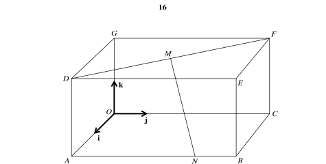
Show detailed mark scheme answer
按图 D=(0,4,2),F=(2,0,2)，故 M=(1,2,2)；N=(2,3,0)：
\overrightarrow{OM}=\mathbf i+2\mathbf j+2\mathbf k,\quad \overrightarrow{MN}=\mathbf i+\mathbf j-2\mathbf k,
\boxed{\mathbf r=(1,2,2)+t(1,1,-2)}.
设 foot 为 F=M+t_0(1,1,-2)，令 (F-O)\cdot(1,1,-2)=0 并代回，得到
\boxed{d^2=\frac{53}{6}},\qquad \boxed{d=\sqrt{\frac{53}{6}}}.Question 9 · 9709/33/M/J/22 Q9(a–b)
anglefoot of perpendicular
With respect to the origin O, the point A has position vector given by \overrightarrow{OA}=\mathbf i+5\mathbf j+6\mathbf k. The line l has vector equation \mathbf r=4\mathbf i+\mathbf k+\lambda(-\mathbf i+2\mathbf j+3\mathbf k).
Find in degrees the acute angle between the directions of \overrightarrow{OA} and l.
Find the position vector of the foot of the perpendicular from A to l. [3+4]
Show detailed mark scheme answer
令 \mathbf a=(1,5,6)、\mathbf d=(-1,2,3)：
\mathbf a\cdot\mathbf d=27,\quad |a|=\sqrt{62},\quad |d|=\sqrt{14}, \qquad \boxed{\theta=23.3^\circ}.
foot F=(4,0,1)+\lambda d，令 (F-A)\cdot d=0，得到 \lambda=2，所以
\boxed{\overrightarrow{OF}=(2,4,7)}.Question 10 · 9709/32/O/N/22 Q6(a–b)
triangle areascalar product
Relative to the origin O, the points A, B and C have position vectors \overrightarrow{OA}=\begin{pmatrix}1\\3\\1\end{pmatrix},\quad \overrightarrow{OB}=\begin{pmatrix}3\\1\\2\end{pmatrix},\quad \overrightarrow{OC}=\begin{pmatrix}5\\3\\-2\end{pmatrix}.
Using a scalar product, find the cosine of angle BAC.
Hence find the area of triangle ABC. Give your answer in a simplified exact form. [4+4]
Show detailed mark scheme answer
\overrightarrow{AB}=(2,-2,1),\quad \overrightarrow{AC}=(4,0,-3), \quad AB\cdot AC=5,\quad |AB|=3,\quad |AC|=5.
故 \boxed{\cos\angle BAC=1/3}，从而 \s\in\angle BAC=2\sqrt2/3。因此
\text{Area}=\frac12(3)(5)\frac{2\sqrt2}{3} =\boxed{5\sqrt2}.Midpoints, intersections and perpendicular constructions
Question 11 · 9709/33/O/N/22 Q9(a–c)
section ratiointersection
With respect to the origin O, the position vectors of the points A, B and C are \overrightarrow{OA}=\begin{pmatrix}0\\5\\2\end{pmatrix},\quad \overrightarrow{OB}=\begin{pmatrix}1\\0\\1\end{pmatrix},\quad \overrightarrow{OC}=\begin{pmatrix}4\\-3\\-2\end{pmatrix}. The midpoint of AC is M and the point N lies on BC, between B and C, and is such that BN=2NC.
Find the position vectors of M and N.
Find a vector equation for the line through M and N.
Find the position vector of the point Q where the line through M and N intersects the line through A and B. [3+2+4]
Show detailed mark scheme answer
M=\frac12(A+C)=(2,1,0), \qquad N=B+\frac23(C-B)=(3,-2,-1).
\overrightarrow{MN}=(1,-3,-1), \qquad \boxed{\mathbf r=(2,1,0)+t(1,-3,-1)}.
与 AB=(0,5,2)+s(1,-5,-1) 联立，解得 t=-3,s=-1，所以
\boxed{\overrightarrow{OQ}=(-1,10,3)}.Question 12 · 9709/32/F/M/23 Q10(a–c)
line intersectionobtuse angle
With respect to the origin O, the points A, B, C and D have position vectors \overrightarrow{OA}=\begin{pmatrix}3\\-1\\2\end{pmatrix},\quad \overrightarrow{OB}=\begin{pmatrix}1\\2\\-3\end{pmatrix},\quad \overrightarrow{OC}=\begin{pmatrix}1\\-2\\5\end{pmatrix},\quad \overrightarrow{OD}=\begin{pmatrix}5\\-6\\11\end{pmatrix}.
- Find the obtuse angle between the vectors \overrightarrow{OA} and \overrightarrow{OB}.
The line l passes through the points A and B.
Find a vector equation for the line l.
Find the position vector of the point of intersection of the line l and the line passing through C and D. [3+2+4]
Show detailed mark scheme answer
A\cdot B=-5,\quad |A|=|B|=\sqrt{14} \Rightarrow \boxed{\theta=\cos^{-1}\left(-\frac5{14}\right)=110.9^\circ}.
\overrightarrow{AB}=(-2,3,-5), \qquad \boxed{\mathbf r=(3,-1,2)+s(-2,3,-5)}.
与 C+t(D-C)=C+t(4,-4,6) 联立，解得 s=-3,t=2，故 intersection 为
\boxed{(9,-10,17)}.Question 13 · 9709/33/M/J/23 Q9(a–b)
unknown constantsperpendicular division
The lines l and m have equations l:\mathbf r=a\mathbf i+3\mathbf j+b\mathbf k+\lambda(c\mathbf i-2\mathbf j+4\mathbf k), m:\mathbf r=\mathbf i+2\mathbf j+3\mathbf k+\mu(2\mathbf i-3\mathbf j+\mathbf k). Relative to the origin O, the position vector of the point P is 4\mathbf i+7\mathbf j-2\mathbf k.
Given that l is perpendicular to m and that P lies on l, find the values of the constants a, b and $c.
The perpendicular from P meets line m at Q. The point R lies on PQ extended, with PQ:QR=2:3. Find the position vector of R. [4+6]
Show detailed mark scheme answer
由 P\in l，3-2\lambda=7 gives \lambda=-2；再由 x,z 得 a-2c=4,b=6。Perpendicular directions：
(c,-2,4)\cdot(2,-3,1)=2c+10=0 \Rightarrow \boxed{(a,b,c)=(-6,6,-5)}.
设 Q=(1+2mu,2-3mu,3+\mu)。令 (Q-P)\cdot(2,-3,1)=0，得 \mu=-1、Q=(-1,5,2)。于是
R=Q+\frac32(Q-P) \Rightarrow \boxed{\overrightarrow{OR}=\left(-\frac{17}{2},2,8\right)}.Question 14 · 9709/31/O/N/23 Q11(a–c)
cuboidangledistance
In the diagram, OABCDEFG is a cuboid in which OA=3 units, OC=2 units and OD=2 units. Unit vectors \mathbf i, \mathbf j and \mathbf k are parallel to OA, OD and OC respectively. M is the midpoint of EF.
- Find the position vector of M.
The position vector of P is \mathbf i+\mathbf j+2\mathbf k.
Calculate angle PAM.
Find the exact length of the perpendicular from P to the line passing through O and M. [1+4+5]
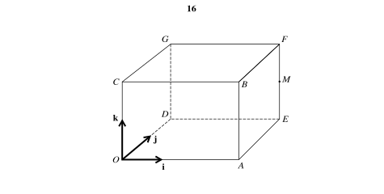
Show detailed mark scheme answer
按图 A=(3,0,0),E=(3,2,0),F=(3,2,2)，所以
\boxed{M=(3,2,1)}.
\overrightarrow{AP}=(-2,1,2),\quad \overrightarrow{AM}=(0,2,1), \quad AP\cdot AM=4,\quad |AP|=3,\quad |AM|=\sqrt5.
因此 \boxed{\angle PAM=53.4^\circ}。对 line OM 用 perpendicular-foot condition，得到
d^2=\frac{35}{14}=\frac52, \qquad \boxed{d=\frac{\sqrt{10}}2}.Question 15 · 9709/32/O/N/23 Q10(a–b)
angle between linesfoot of perpendicular
The equations of the lines l and m are given by l:\mathbf r=\begin{pmatrix}3\\-2\\1\end{pmatrix} +\lambda\begin{pmatrix}1\\1\\2\end{pmatrix}, \qquad m:\mathbf r=\begin{pmatrix}6\\-3\\6\end{pmatrix} +\mu\begin{pmatrix}-2\\4\\c\end{pmatrix}, where c is a positive constant. It is given that the angle between l and m is 60^\circ.
Find the value of c.
Show that the length of the perpendicular from (6,-3,6) to l is \sqrt{11}. [4+5]
Show detailed mark scheme answer
\frac{2+2c}{\sqrt6\sqrt{20+c^2}}=\frac12 \Rightarrow 5c^2+16c-52=0.
因 c>0，\boxed{c=2}。令 A=(3,-2,1)、Q=(6,-3,6)、d=(1,1,2)，则
(Q-A)\cdot d=12,\quad d^2=6 \Rightarrow t=2,\quad F=A+2d=(5,0,5).
故 |QF|=|(1,-3,1)|=\boxed{\sqrt{11}}。2024 Paper 3 applications
Question 16 · 9709/32/M/J/24 Q8(a–c)
line intersectionequal lengths
The points A, B and C have position vectors \overrightarrow{OA}=-2\mathbf i+\mathbf j+4\mathbf k,\quad \overrightarrow{OB}=5\mathbf i+2\mathbf j,\quad \overrightarrow{OC}=8\mathbf i+5\mathbf j-3\mathbf k. The line l_1 passes through B and C.
- Find a vector equation for l_1.
The line l_2 has equation \mathbf r=-2\mathbf i+\mathbf j+4\mathbf k+n(3\mathbf i+\mathbf j-2\mathbf k).
Find the coordinates of the point of intersection of l_1 and l_2.
The point D on l_2 is such that AB=BD. Find the position vector of D. [3+4+5]
Show detailed mark scheme answer
\overrightarrow{BC}=(3,3,-3)=3(1,1,-1), \quad \boxed{l_1:\mathbf r=(5,2,0)+\lambda(1,1,-1)}.
联立 l_1,l_2 得 \lambda=2,n=3，所以 intersection 是 \boxed{(7,4,-2)}。
令 D=(-2,1,4)+n(3,1,-2)。因 AB^2=66：
(-7+3n)^2+(-1+n)^2+(2-2n)^2=66 \Rightarrow 7n^2-26n-6=0.
故
\boxed{n=\frac{13\pm \sqrt{211}}7},
并将这两个值分别代回 D=(-2+3n,1+n,4-2n)。Question 17 · 9709/32/O/N/24 Q9(a–b)
trapeziumdiagonal intersection
With respect to the origin O, the points A, B and C have position vectors \overrightarrow{OA}=\begin{pmatrix}2\\1\\-3\end{pmatrix},\quad \overrightarrow{OB}=\begin{pmatrix}0\\4\\1\end{pmatrix},\quad \overrightarrow{OC}=\begin{pmatrix}-3\\-2\\2\end{pmatrix}. The point D is such that ABCD is a trapezium with \overrightarrow{DC}=3\overrightarrow{AB}.
Find the position vector of D.
The diagonals of the trapezium intersect at the point P. Find the position vector of P. [2+5]
Show detailed mark scheme answer
\overrightarrow{AB}=(-2,3,4),\qquad D=C-3\overrightarrow{AB}=(3,-11,-10).
对角线联立：
A+s(C-A)=B+t(D-B).
解得 s=t=1/4，故
\boxed{D=(3,-11,-10)},\qquad \boxed{P=\left(\frac34,\frac14,-\frac74\right)}.Question 18 · 9709/31/O/N/24 Q9(a–b)
parallel lineparameter
The position vector of point A relative to the origin O is 8\mathbf i-5\mathbf j+6\mathbf k. The line l passes through A and is parallel to the vector $2i+j+4k.
State a vector equation for l.
The position vector of point B relative to the origin O is -t\mathbf i+4t\mathbf j+3t\mathbf k, where t is a constant. The line l also passes through B. Find the value of t. [2+3]
Show detailed mark scheme answer
\boxed{\mathbf r=(8,-5,6)+\lambda(2,1,4)}.
联立 B=(-t,4t,3t)：
(8+2\lambda,-5+\lambda,6+4\lambda)=(-t,4t,3t).
前两式给 \lambda=-3,t=-2，第三式验证 -6=3(-2)。故 \boxed{t=-2}。Question 19 · 9709/31/M/J/21 Q8(a–b)
angleequal distances
With respect to the origin O, the points A and B have position vectors given by \overrightarrow{OA}=\begin{pmatrix}1\\2\\1\end{pmatrix},\quad \overrightarrow{OB}=\begin{pmatrix}3\\1\\-2\end{pmatrix}. The line l has equation \mathbf r=\begin{pmatrix}2\\3\\1\end{pmatrix} +\lambda\begin{pmatrix}1\\-2\\1\end{pmatrix}.
Find the acute angle between the directions of AB and l.
Find the position vector of the point P on l such that AP=BP. [4+5]
Show detailed mark scheme answer
\overrightarrow{AB}=(2,-1,-3),\quad d=(1,-2,1), \quad \overrightarrow{AB}\cdot d=1.
所以
\boxed{\cos\theta=\frac1{\sqrt{84}}}, \qquad \boxed{\theta=83.7^\circ}.
令 P=(2,3,1)+\lambda d。由 AP=BP，平方并相减：
2P\cdot(B-A)=|B|^2-|A|^2 \Rightarrow \lambda=6.
故 \boxed{\overrightarrow{OP}=(8,-9,7)}。Question 20 · 9709/31/M/J/24 Q9(a–d)
perpendicular linesreflection
The equations of two straight lines l_1 and l_2 are
l_1:\ \mathbf r=\mathbf i-2\mathbf j+3\mathbf k+m(2\mathbf i-\mathbf j+a\mathbf k), \qquad l_2:\ \mathbf r=-\mathbf i-\mathbf j-\mathbf k+n(3\mathbf i-2\mathbf j-2\mathbf k),
where a is a constant.
The lines l_1 and l_2 are perpendicular.
- Show that a=4.
The lines l_1 and l_2 also intersect.
- Find the position vector of the point of intersection.
The point A has position vector -5\mathbf i+\mathbf j-9\mathbf k.
- Show that A lies on l_1.
The point B is the image of A after a reflection in the line l_2.
- Find the position vector of B. [1+4+2+2]
Show detailed mark scheme answer
两条直线的方向向量为 (2,-1,a) 和 (3,-2,-2)。垂直条件给出
(2,-1,a)\cdot(3,-2,-2)=6+2-2a=0,
所以 \boxed{a=4}。
代入 a=4，令两条直线相交：
(1+2m,-2-m,3+4m)=(-1+3n,-1-2n,-1-2n).
解得 m=-1,n=0，故交点的 position vector 为
\boxed{-\mathbf i-\mathbf j-\mathbf k}.
当 m=-3 时，
\mathbf i-2\mathbf j+3\mathbf k-3(2\mathbf i-\mathbf j+4\mathbf k) =-5\mathbf i+\mathbf j-9\mathbf k,
所以 \boxed{A\text{ lies on }l_1}。
令 P=-\mathbf i-\mathbf j-\mathbf k 为 A 在 l_2 上的垂足。由于
(A-P)\cdot(3,-2,-2)=(-4,2,-8)\cdot(3,-2,-2)=0,
所以 P 正是垂足，反射点为 B=2P-A：
\boxed{\overrightarrow{OB}=3\mathbf i-3\mathbf j+7\mathbf k}.PastPaper/2024/2024/A-Level-CAIE数学QP-202406-Mathematics-P31-A-Level题库大全小程序.pdf, Q9(a–d), and matching mark scheme.
Exam checklist
- 先写 displacement vector，例如 \overrightarrow{AB}=\mathbf b-\mathbf a，不要反向。
- 求 angle between lines 时使用 direction vectors；要求 acute angle 时取 dot product 的 absolute value。
- 判断 3D lines 是否相交，必须检查三个 coordinate equations。
- 求 foot of perpendicular 时，先把 foot 写在线上，再用 dot product equal to zero。
- 题目给 ratio 时确认端点顺序，完成后用 ratio 关系反向检查。
- Syllabus 不要求 vector product；优先用 scalar product 展开 perpendicular 条件，保证 method marks 清晰。